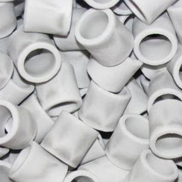
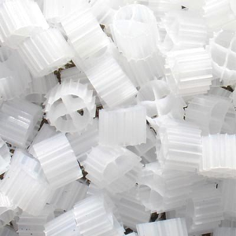
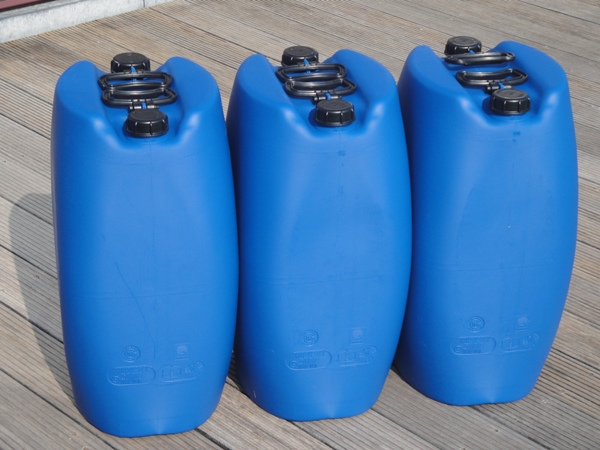
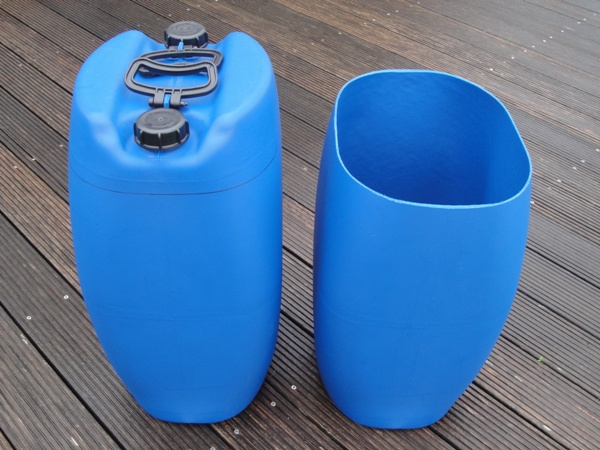
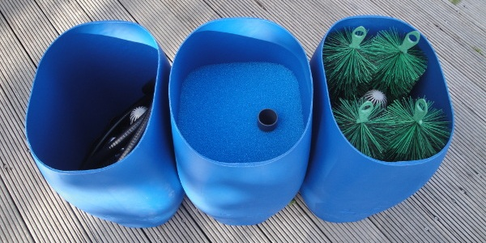
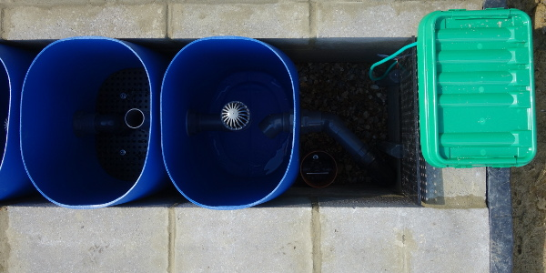
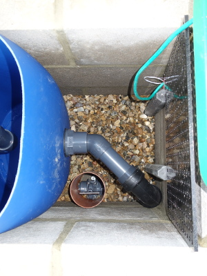

Filter
Een van de belangrijkste onderdelen van de vijver is de filter. Omwille van het formele karakter van de vijver wordt deze onder het terras verborgen. Er is gekozen voor een zelfgebouwde drie-kamer filter waarbij het water door de zwaartekracht (communicerende vaten) naar de filter stroomt. Hierdoor staat de filter op gelijke hoogte als de vijver.
De eerste kamer zal dienst doen als bezinkingskamer (settlement chamber) met extra filterborstels als mechanische filtering.
In de tweede kamer bevindt zich eerst filterschuim om de mechanische filtering verder te zetten. Daaronder zit een statisch bed filter als eerste gedeelte van de biologische filter met Siporax als filtermedium.

De derde kamer is een bewegend bed filter (moving bed) als tweede gedeelte van de biologische filter. Als filtermedium wordt er gebruik gemaakt van Kaldness K1 en een bijkomende luchtpomp zal het filtermedium continu in beweging houden.

De eerste stap is om van deze stapelbare jerrycans filtervaten te maken en ze vervolgens met elkaar te koppelen (tweede stap). Vandaar dat er geopteerd is voor deze nagenoeg rechthoekige jerrycans en niet voor ronde vaten met klemdeksel.

(30 september 2017)
Met het juiste gereedschap en wat hulp is deze eerste stap probleemloos verlopen.

(30 september 2017)
Met wat geboor, gezaag en gelijm (en uiteraard nog wat meer) werd de filter stap voor stap opgebouwd. De laatste aanpassingen zullen pas bij de indienstname gebeuren.

(13 november 2017)
Het is duidelijk te zien dat de afmetingen van de filterkamer en de filtervaten op elkaar zijn afgestemd ... dit noemt men op maat gemaakt. De aansluiting van de filter met behulp van een flexibele bocht om eventuele verschillen op te vangen, past probleemloos.

(1 mei 2018)

(1 mei 2018)